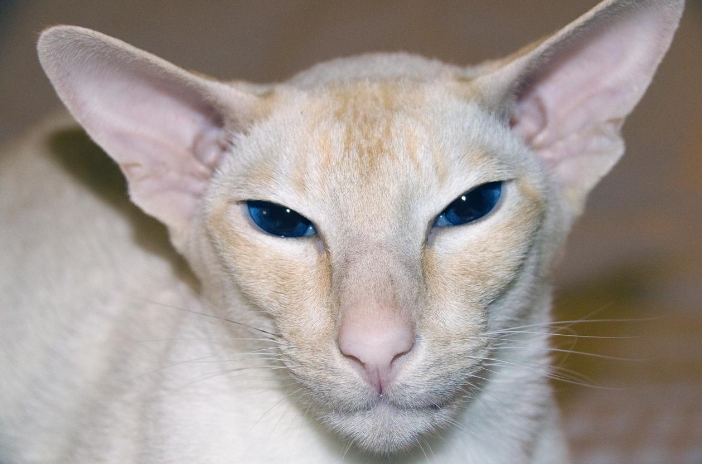

Es un felino que surgió de la combinación del gato siamés con otros gatos de pelo corto, especialmente el american shorthair o americano de pelo corto. Como consecuencia, surgió un gato con el patrón colorpoint del siamés, pero con colores de manto diferentes, no aceptados para el siamés, como el rojo, el carey, el crema, el tabby y pequeñas variaciones.
Se asemeja al siamés en que también tiene el pelo corto, el cuerpo de tamaño medio, musculoso, anguloso y largo y los ojos azules con una elegancia natural característica. Los rasgos físicos del gato colorpoint son:
La cabeza de esta raza tiene forma de cuña, es estrecha y mediana, con un cráneo plano, hocico fino y nariz larga y recta.
Las orejas son puntiagudas, anchas en la base y bastante largas, continuando la línea de la cuña del cráneo.
Los ojos son almendrados, medianos y de color azul profundo vívido.
La cola es larga y termina en punta.
Las patas son esbeltas y largas.
El pelaje del gato colorpoint shorthair es corto y fino, pegado al cuerpo, muy brillante y con patrón colorpoint en las zonas de menos temperatura del cuerpo, como la punta de las orejas, la cola y la parte distal de las patas.

Puede presentar multitud de colores y patrones, combinados o no, siempre respetando el colorpoint en las zonas antes comentadas. Estos colores son los siguientes:
Rojo.
Crema.
Lince.
Chocolate.
Carey.
Tabby.
Azul.
Lila.
Seal

Presentan una personalidad muy semejante a la de los gatos siameses. Así, son felinos inteligentes, cariñosos, activos, maulladores y juguetones. Adoran interactuar con sus cuidadores y que les presten atención. Son también muy extrovertidos, incluso con los extraños, a los que pueden saludar con maullidos, ya que prácticamente los usan para todo. Es una raza muy comunicadora y expresiva, como prueban los más de 100 tonos vocales de maullido que emiten. También son gatos muy sensibles, que perciben el estado anímico de sus cuidadores y no dudan en sentarse cerca de ellos siempre que lo necesiten. Sin embargo, también pueden sufrir cambios muy rápidos en su estado de ánimo. Por último, al ser una raza muy inteligente, aprenden rápido juegos y órdenes, siendo fácil su educación

Debido a su naturaleza, estos gatos requieren mucha atención, es decir, muchos mimos, juegos y cuidados diarios para que no se sientan solos o poco queridos. Aunque tienen el pelo corto, se deben cepillar al menos 2-3 veces por semana, más en época de muda, que ocurre normalmente en la primavera y en el otoño. El cepillado tiene que ser más frecuente para prevenir las bolas de pelo, ya que así retiramos el pelo muerto que, de otra manera, sería ingerido en el acicalamiento diario. El baño no es necesario, excepto cuando estén muy sucios o se les haya recetado un champú como tratamiento para algún problema dermatológico. Su piel es sensible y con tendencia a sufrir problemas, por lo que debemos alejarlos de la humedad y de las temperaturas extremas. Al ser tan afectuosos y adorar la compañía de los suyos, en el hogar se deben tener en cuenta medidas de enriquecimiento ambiental, sobre todo para cuando se dejen solos, como sitios altos para subirse, suficientes rascadores o juguetes interactivos que, además, favorecen su actividad y previenen el sobrepeso. Respecto a la alimentación, si se ofrece alimento seco, conviene combinarlo con el húmedo y darlo en varias tomas diarias. En ocasiones se pueden ofrecer alimentos complementarios, como snacks, sopas, leche para gatos adultos o diferentes premios, especialmente para recompensar buenos comportamientos o después de realizar alguna cura, limpieza o tratamiento. La higiene del arenero debe ser diaria y, al menos una vez a la semana, se deberán limpiar sus oídos, ojos y dientes para prevenir enfermedades y diagnosticar.

Tienen una esperanza de vida de 8 a 12 años y, generalmente, son gatos sanos, aunque es verdad que presentan tendencia al desarrollo de las mismas patologías que los siameses, como son las siguientes:
Estrabismo: pérdida de la normal alineación de los ojos que no impide una correcta visión.
Nistagmo: consiste en el movimiento involuntario y rápido de los globos oculares, de arriba abajo o lateral, que puede ser causado por el gen cs que portan los siameses.
Amiloidosis renal y hepática: acúmulo de sustancia amiloide en estos órganos, lo que puede provocar insuficiencia orgánica, con sus correspondientes consecuencias a nivel general.Asma bronquial: tipo de bronquitis que puede derivar en enfisema y bronquiectasia.
Defectos cardiacos congénitos: como la cardiomiopatía hipertrófica, en la que se produce una hipertrofia o aumento del desarrollo del músculo cardiaco, repercutiendo en el bombeo del corazón y en la correcta circulación sanguínea.
Otitis: inflamación/infección del canal auditivo.
Alergia alimentaria o reacción adversa al alimento: se manifiesta a través de signos digestivos y cutáneos que remiten con la retirada de la proteína que causa la reacción.
Sordera: puede ser una enfermedad hereditaria en los siameses.
Hidrocefalia: acúmulo de líquido cefalorraquídeo en el cerebro. Puede comprimir la corteza cerebral, causando signos neurológicos, coma, incoordinación, estrabismo o nistagmo.
Cáncer de mama: es el tercer tumor más frecuente en las hembras de esta raza. Se produce una transformación de las células mamarias en tumorales con capacidad para invadir estructuras próximas y lejanas (metástasis), especialmente en pulmón.
Alteración de la conducta: los gatos colorpoint tienden a ser muy cambiantes en su estado de ánimo